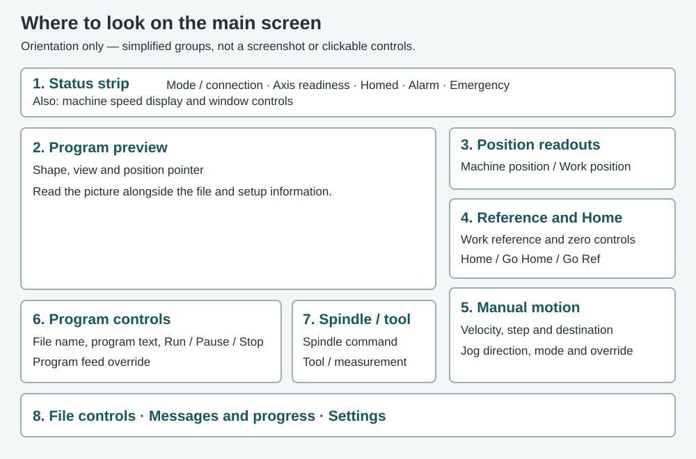

RADONIX · ROUTERXYZ+TC · CHAPTER 4
Operator Manual · English · 8 October 2026
Main Window and Status Indicators
Learn where to look, what each part of the screen tells you, and which controls can change the job or move the machine.
Expanded draft for review. A guided screen tour for operators. The orientation diagram is not an application screenshot; reserved captures must match the installed version.
4.1 Read the screen before using its controls
The main window brings together information and actions. Some areas report a condition, some let you enter a value, and some issue a command. Learning the difference is more useful than memorizing the location of every button. Before touching an unfamiliar item, decide which of those three jobs it performs.
An indicator reports a condition such as connection or homing. A readout displays information such as position. An entry field lets you enter or select something. A command asks the application or machine to do something. A control can combine roles: the Tool selector displays a tool number, but accepting a different selection can also request a real exchange.
| Screen item | What you use it for | Example |
|---|---|---|
| Status indication | Understand a reported condition. | Homed shows whether the complete required homing condition is reported. |
| Position readout | Read a position in its stated coordinate system. | Machine position and Work position can show different numbers for the same head location. |
| Editable value | Prepare or change a value for an operation. | Step(mm) specifies the distance used by a step jog. |
| Action button | Request an operation. | Goto X requests movement to an X destination. |
| Combined display and control | Read a value and, when permitted, change the associated operation. | Accepting a Tool selection can start a tool exchange. |
Read the screen in a consistent order: identify the mode and connection, check relevant indicators and messages, identify the loaded job, then examine the values needed for your intended action. This gives each number a context. A plausible position or a green-looking lamp means little if you do not know whether the session is simulated, connected or still preparing a file.
This chapter is a tour, not an invitation to try every control on the real machine. Follow it by observing the screen in an approved stationary condition or during supervised training. For actual movement, use the relevant operating procedure and the checks in Chapter 2.
The captions in this chapter describe the reviewed English application. Another language, theme or screen size can change appearance. Use the caption, unit, surrounding controls and current state together; do not identify an action solely by its colour or approximate position.
4.2 Find the main screen areas
The reviewed main window is arranged around a large preview on the left and machine-preparation controls on the right. The top strip reports overall status. Lower areas contain the machining program, its running controls and the spindle/tool controls. A bottom strip provides file actions, messages and Configuration.
Use the orientation map below to learn these relationships. It deliberately leaves out individual icons and decorative details. It is not a screenshot and should not be used to match a button by shape. The actual application captures reserved later in this section will provide that visual detail.

| Area | Find it when you need to… | Read it with… |
|---|---|---|
| 1. Status strip | Check connection, axis readiness, homing or an alarm. | The current message and intended operating mode. |
| 2. Program preview | Understand the displayed shape and its orientation. | The correct job file, references and physical setup. |
| 3. Position readouts | Read machine and work coordinates. | The panel title, axis name, sign and unit. |
| 4. Reference and Home controls | Find homing, reference selection and zero-setting actions. | The separate homing and work-origin procedures. |
| 5. Manual motion | Find jog directions, step sizes, velocities and destinations. | The selected jog mode and the intended route. |
| 6. Program controls | Read program text or find Run, Pause, Reset and feed override. | The selected starting point and current operation state. |
| 7. Spindle and tool | Find spindle command, requested speed, tool selection and measurement. | The actual tooling and the appropriate operating procedure. |
| 8. Bottom strip | Open or edit a file, select a start line, read messages or open Configuration. | The purpose and consequences of the selected action. |
Several areas belong to the same operation. To begin a job, for example, you may look at the file name, preview, tool display, connection indicators and Run control. Their separation on the screen does not make them independent checks. A correct file name does not excuse a wrong tool, and a ready axis does not confirm the work origin.
Some commands also appear more than once. The Pause controls in the run, jog and reference/motion areas share one all-motion Pause command and preserve the TP0 cursor. The Reset button in the run area stops all motion and then rewinds TP0. Their effects are not restricted to the nearest panel.
FIGURE 4-2 · FULL-WINDOW SCREENSHOT REQUIRED
The actual main window with numbered callouts
Capture the English main window in a clearly identified, stationary Simulation session with an approved sample file loaded. Add callouts 1–8 matching the orientation map and table. Keep the connection caption, units and bottom status visible. Label the image as Simulation and state the application version.
Suggested image: assets/images/04-main-window-overview.png. Use the real running window; do not use the form designer or assemble controls from different states.
4.3 Interpret the connection, axis and warning indicators
The indicators across the top of the window answer separate questions. Read each caption before interpreting its active or inactive appearance. An active readiness indication and an active warning indication do not mean the same thing simply because both are illuminated.
In Normal mode the Online indicator reports contact with the physical MM. In Simulation mode the same indicator is labelled Simulation and reports the simulated session. Check Controller / Mode and the runtime connection result to identify the active session.
| Caption | When the indication is active | What it does not establish |
|---|---|---|
| Online | The physical MM has been identified, independently of licensing and the number of connected axes. | Homing, job preparation or physical setup is complete. |
| X Axis, Y Axis, Z Axis | The corresponding axis reports ready to move, without its axis or paired-drive fault, while the machine connection is operational. | That the axis has completed homing or the intended route is clear. |
| Homed | All configured axes report homed while the machine connection is operational, including the additional gantry motor. | The workpiece's origin, tool length or machining file is correct. |
| Alarm | At least one configured axis reports an axis fault or a fault involving paired drives. | Which component needs attention, or that every possible machine problem is represented by this lamp. |
| Emergency | The emergency input is open under the supplied normally closed arrangement; the indication is red. | All parts are physically at rest or entry into the machine is permitted. |
Axis readiness and homing are different
A drive can be ready to respond to a command before the machine has established its reference. This is why axis-ready indications and Homed are separate. Readiness answers whether the relevant drive is available under its reported conditions. Homing answers whether the reference-search procedure has established the required machine positions.
The machine uses an additional motor for the gantry even though the main position displays show X, Y and Z. The overall Homed and Alarm checks include that motor. Do not conclude that the whole machine is homed merely because the three visible axis-ready indicators are active.
Warnings need context
If Alarm becomes active, read the accompanying message or report rather than repeatedly trying the rejected command. If Emergency is active, follow the applicable machine procedure. These indicators report conditions; clicking their screen areas is not a repair or an emergency-stop reset procedure.
When communication is unavailable, do not treat retained numbers or a familiar caption as fresh confirmation of the machine's condition. If the physical situation is uncertain, use the response described in Chapter 2. A screen indication is information about the system; it does not replace the machine's physical stopping or access arrangements.
After any fault or connection interruption, look for a consistent result across the indicators and messages before continuing. A single warning disappearing is not proof that every preparation step has been restored.
4.4 Read Machine position and Work position correctly
The two position panels describe the machine's location using different references. Machine position uses the machine coordinate system. Work position expresses the location relative to the active work setup and its applicable corrections. Different numbers in these panels are therefore expected; they are not automatically evidence of an error.
Each row identifies an axis: X, Y or Z. Read the axis name, the sign of the number and the unit before using the value. The reviewed main-window position readouts are expressed in millimetres. A minus sign is part of the coordinate, not a fault symbol. Its meaning depends on the selected reference and axis direction.
The same place can have two descriptions
For a simplified example, imagine that a point has a machine X coordinate of 500 mm and the job's X origin is 400 mm along the same axis, with no other X correction involved. Its work X coordinate would be 100 mm. The two numbers describe the same point from different starting references. These are explanation values, not values to enter into your machine.
A work-position value can change when the reference or an applicable correction changes, even if the head has not moved. For that reason, a changed work readout should be interpreted alongside any reference selection, zero-setting or tool-related action that just occurred.
| Where the number appears | What it represents | How to avoid a mistake |
|---|---|---|
| Machine position | The controller's commanded axis position in machine coordinates. | Do not treat it as a separately measured inspection of the workpiece. |
| Work position | The position expressed with the active work reference and applicable corrections. | Check which reference is active before interpreting zero or a distance. |
| Reference(mm) | The reference values for the selected work-origin entry. | Recognize that these are editable setup values, not a second live-position panel. |
| Position(mm) beside Goto | A destination for a manual axis move. | Do not confuse a requested destination with the current position. |
The main position readouts use the controller's commanded position. They should not be interpreted as an independent physical measuring instrument that proves the cutter is exactly where the screen says it is. They do not inspect the material, confirm its dimensions or replace the checks required after a mechanical problem.
FIGURE 4-3 · DETAIL SCREENSHOT REQUIRED
Readouts, reference values and destinations
Capture the right-hand area of the running English application. Mark Machine position, Work position, the Reference(mm) values and the Position(mm) destination fields as four different groups. Use a stationary Simulation example with clearly labelled illustrative values.
Suggested image: assets/images/04-position-reference-destination.png.
The next chapter explains coordinate systems and units more fully. For now, the essential habit is to identify the panel before reading the number and identify the operation before changing it.
4.5 Distinguish Home, Go Home, Go Ref and zero setting
The reference and homing area groups controls that sound similar but perform different actions. Read their complete captions. Home, Go Home and Set X0 are not three ways of doing the same thing.
Home starts the machine's homing procedure. That procedure uses the configured reference-search sequence to establish machine positions. Go Home is a positioning command: in the reviewed application it requests the machine-coordinate zero destination using the positioning sequence. It does not perform the homing search or establish a missing reference.
The English main-window caption Go Ref means Go Reference. It requests movement to the current work-reference destination with the applicable corrections. It is not a shortcut for opening the reference settings. As with other positioning actions, check the intended route before using it.
| Control | Purpose | What to recognize before using it |
|---|---|---|
| Home | Establish the machine reference through homing. | It starts a machine movement sequence. |
| Go Home | Position at the machine-coordinate zero destination. | It requires the applicable readiness conditions and does not replace homing. |
| Go Ref | Position at the active work-reference destination. | The selected reference and applicable corrections affect the destination. |
| Reference selector | Select a work-origin entry such as G54 or G55. | Selection changes the active reference; it is not merely a list to browse. |
| Reference(mm) values | Read or edit the selected reference's axis values when permitted. | They are setup information that can change the meaning of later coordinates. |
| Set X0, Set Y0, Set Z0 | Set the selected reference so that the current position is work zero on that axis, with applicable corrections accounted for. | These actions change the reference; they do not move the head to a zero position. |
| Pause | Request all-motion Pause while preserving TP0 progress. | It is not restricted to the reference area. |
The names G54–G59 identify saved work references
You do not need programming knowledge to recognize these names. Think of them as six labelled work-origin entries. The job and setup procedure determine which entry is appropriate. Two entries can contain different values, or even look identical while still being separate entries. Always read the selected name before interpreting or editing its X, Y and Z values.
Changing the selected entry updates the displayed reference values. The reviewed application discards unfinished reference text when you change that selection, so a partially typed value is not transferred to another entry. Complete or cancel an intended edit deliberately; do not move between entries while assuming unfinished text has already been accepted.
The main window puts these controls close together because they are used during preparation. Their proximity does not make them interchangeable. Detailed homing and work-origin chapters explain how to use them; this screen tour teaches you to identify their effects before committing a command.
4.6 Identify the manual-motion controls and their values
The manual-motion area lets you prepare and request individual movements. The common word jog means an operator-directed machine move. Before using this area, identify the axis, the kind of move and the values that will be used. The presence of an arrow does not tell you the distance or speed by itself.
The X, Y and Z rows contain values under V(mm/s), Step(mm) and Position(mm). V is velocity: the requested speed setting in millimetres per second. Step is a distance. Position is a destination in machine coordinates for the corresponding Goto command. These are three different quantities even when their numbers happen to match.
| Item | Meaning | Check before movement |
|---|---|---|
| X+, X−, Y+, Y−, Z+, Z− | Positive or negative movement along the named axis. | The physical direction established during machine training. |
| Diagonal direction controls | A combined X/Y jog request. | Both axis directions and the complete diagonal route. |
| Jog mode | Continuous movement while held, or one configured step. | Which behavior is currently selected. |
| V(mm/s) | The axis's requested jog velocity before the jog percentage is applied. | The intended value and the relevant unit. |
| Step(mm) | The distance for a step movement. | The distance suits the intended adjustment and available route. |
| Position(mm) and Goto X/Y/Z | A destination and the command to move that axis there. | The destination is a machine coordinate, not a distance measured from here. |
| Jog percentage slider | A percentage used to scale the requested jog velocity. | It is the jog control, not the program-feed or spindle-speed slider. |
Continuous and finite movements behave differently
In continuous jog, holding a direction control requests movement and releasing it requests stopping that jog. In step mode, one activation requests the configured distance. Goto requests travel to the entered destination. A step or destination move can continue after you release the mouse button or key.
If a finite move must be interrupted, use the applicable Pause or Reset control. Do not rely on releasing the button to cancel it. Use the physical emergency procedure if the situation requires it, as explained in Chapter 2.
The default jog percentage range in the main window is 5–100%. Reducing that percentage changes the requested speed scale, not the configured step distance or destination. It is not a substitute for a Stop command. A slow move to the wrong destination is still the wrong move.
For orientation, read the fields without changing them. When an actual manual adjustment is needed, follow the Manual Motion and Position Jog procedure. If a direction, sign or destination is unclear, resolve it before pressing an arrow or Goto button.
4.7 Identify the job, its text and the preview
The program area contains the loaded file's identity and its machining instructions. The larger preview shows the prepared geometry. Use both views together: the text helps identify instructions and progress, while the picture helps you understand the shape and spatial arrangement.
You do not need to become a programmer to begin using this area. You do need to recognize the file you were instructed to use, notice preparation messages and understand that some interactions can change the intended start of the job. Detailed editing and command interpretation belong to later chapters.
Start with the file identity
The file-path display identifies the opened program. Before loading, it can show No program loaded. Check the name and location against the approved job information. Two different files can produce similar-looking previews, so a familiar outline is not enough to establish the correct revision.
| Control or area | Purpose | Operator point to remember |
|---|---|---|
| Open file | Select and prepare a machining file. | Wait for preparation and read its result before considering Run. |
| Cancel during loading | The Open file control changes to a cancellation action while preparation is active. | Cancellation can take time to complete; it does not mean deleting the original file. |
| Program text | Display the machining instructions and their selection/progress presentation. | Double-clicking a line while stopped can select a later start location. |
| Edit G-code | Open the machining-file editor. | Editing the file is a separate authorized task, not a preview-display adjustment. |
| Start Line | Open the interface for choosing a program starting location. | A selected start affects a later Run; it needs a restart procedure. |
| 3D preview | Inspect the prepared shape, view and position/reference presentation. | It does not inspect the actual clamps, tool or material. |
Viewing the picture does not prove the setup
Changing the preview's viewpoint changes how you look at the job, not the physical machine's position. Conversely, changing a work reference can move the displayed job relative to the machine-coordinate scene without changing the shape described by the file. Read the references and position panels when something appears to shift unexpectedly.
The position pointer represents the application's position information. It is not a camera view of the real cutter. A clear-looking path in the preview does not establish clearance around every physical object. The whole-route checks in Chapter 2 still apply.
For that reason, avoid casually double-clicking program lines while examining a stopped job. If you intended only to read the text but changed the start selection, establish the intended starting place before Run. Do not assume the application will ignore the new selection because no movement occurred immediately.
Use the preview to ask useful questions: Is this the intended part? Is its orientation plausible? Are the displayed dimensions consistent with the job? Then confirm those observations through the approved setup and file-checking procedures. A visually convincing picture is one piece of preparation, not its final approval.
4.8 Recognize Run, Pause, Reset and program feed override
The program controls are placed beside the machining text so that you can read the job and control its execution from the same area. Before using them, establish the intended file and starting point. A control becoming available means the application's required conditions allow a request; it does not inspect the physical setup for you.
Run requests execution from the applicable start or continuation point. The accepted request may begin tool preparation or positioning before cutting. Watch the reported stage and the expected physical sequence from the permitted operating position. Do not press Run again merely because the first visible action is not the first cutting move you expected.
| Control | Main purpose | Consequence to remember |
|---|---|---|
| Run | Request the prepared job's execution or continuation under the current start conditions. | Tool preparation or entry positioning may happen before cutting. |
| Pause | Request stopping of motion while retaining the main machining program's place. | An interrupted auxiliary operation, especially a tool exchange, still requires appropriate recovery. |
| Reset | Request stopping of all motion and reset the main program's place after it is idle. | A later Run is not automatically continuation from the interrupted cutting location. |
| Program feed override | Scale the main program's feed within the displayed percentage range. | At zero, raising the value again can resume the retained movement without another Run. |
The program-feed slider is separate from the jog-percentage slider and the spindle-speed control. The default program override range is 0–120%. Read its location and purpose before changing it. “Fifty percent” in this area is a feed adjustment, not a spindle-speed reading or a statement that half the job is finished.
Do not use appearance alone to decide whether a job has ended
A program held at zero feed can appear stationary while still being active. A Pause keeps the main program's place, but it does not guarantee spindle standstill or safe physical access. Stop changes the later start situation by resetting the main program after stopping. These differences matter even when the position numbers look identical.
The Pause controls in the jog and reference areas invoke the same all-motion Pause as the program Pause button. They preserve TP0 progress. Only Reset schedules the main-program rewind after stopping.
This section is a recognition guide. Before running or interrupting an actual job, use the stopping explanation in Chapter 2 and the later running/recovery procedures. An available button is not permission to skip the pre-run checklist.
4.9 Read the spindle and tool area without confusing commands with confirmation
The spindle and tool area combines several related operations: commanding spindle rotation, setting the requested spindle speed, selecting a tool and requesting measurement. They belong together, but they report or change different things. A spindle-speed request is not a tool-length value, and a displayed tool number is not a description of the cutter's shape or condition.
The Spindle control is associated with the spindle run command. Its displayed command state is not an independent measurement of actual rotation or standstill. The adjacent speed control represents a requested rotational speed in revolutions per minute, usually abbreviated RPM. Do not treat that request as a live tachometer reading.
| Item | What it means | What it does not prove |
|---|---|---|
| Spindle | The control associated with the spindle run command. | The physical tool has reached the requested speed or come to rest. |
| Spindle speed control | The requested rotational speed, within the configured available range. | The actual measured RPM or an approved speed for every tool and material. |
| Tool | The current confirmed tool-state display and selector for an available tool request. | The physical cutter's identity, condition or suitability without the required setup checks. |
| Blank tool selection | Tool zero: the empty-spindle choice. | A harmless way to clear text; accepting it can request unloading. |
| Measure Tool | A request for the installed tool's measurement, or an empty-spindle reference measurement when no tool is recorded. | A display-only operation; it can initiate measurement movement. |
Tool selection can start an exchange
The Tool list contains the enabled tool choices. Selecting an entry from the list or accepting the choice with Enter can request a manual exchange when permitted. Moving focus away does not, by itself, commit this particular tool selection. Do not generalize that behavior to every other editable field in the application.
During an exchange, the selector is unavailable for a competing selection and follows the confirmed tool state as the operation progresses. The requested destination tool is not necessarily already in the spindle. If the operation stops part-way through, use the required recovery procedure rather than interpreting the original request as proof of completion.
Measurement has a physical sequence
The reviewed English caption is Measure Tool. With a recorded tool, it requests measurement relative to the established empty-spindle reference. With an empty spindle, it requests that reference measurement and asks for confirmation. Read the question before accepting it; the presence or absence of a tool changes the purpose of the measurement.
Use this area only after the tooling and operating conditions have been checked. The detailed spindle, exchange and measurement chapters explain the individual procedures. This chapter's purpose is to help you recognize which operation you are about to request and which result still needs confirmation.
4.10 Understand speed, percentage and time displays
The screen shows several numbers related to speed and progress. Read their unit and location before comparing them. A value in millimetres per second, a percentage and a value in revolutions per minute describe different quantities. They are not alternative displays of one machine speed.
The top-strip V: … mm/s readout is an estimate of combined X/Y/Z movement speed calculated from changes in the commanded positions over a short sampling interval. It is a movement display, not the spindle's rotational speed and not an independent measurement at the cutter tip. Because it is sampled, it need not change at the exact instant of a command.
| Number or unit | Meaning in its screen area | Do not confuse it with |
|---|---|---|
| Top-strip V, in mm/s | An estimate of combined commanded X/Y/Z movement speed. | Actual spindle RPM, a destination or a certified standstill signal. |
| Jog-row V, in mm/s | A requested manual-movement speed setting. | The top-strip speed estimate. |
| Program-feed percentage | A scale factor for the main program's feed. | The percentage of the job already completed. |
| Jog percentage | A scale factor used for manual jog velocity. | Program-feed adjustment or step distance. |
| Spindle RPM | A requested rotational speed. | A physical rotation measurement or linear movement speed. |
| Progress percentage | The progress presentation for the operation currently being reported. | A universal indication that the finished part is complete. |
The time display is an estimate, not a stopwatch
During program presentation, the status area can show a percentage followed by Elapsed, Remaining ≈ and Total ≈. In the reviewed application, all three times use the prepared program's estimated timeline. Elapsed represents the estimated time assigned to the preceding portion of the program; it is not simply the real time since you pressed Run.
Pauses, changes in feed override and other real operating delays can make actual clock time differ from that timeline. Do not use the display as a production-time record or a guaranteed finishing time. In particular, waiting with the machine paused does not mean that the nominal Elapsed value will count the waiting time like a clock.
If you select a start part-way through the program, the estimate still refers to the original whole program and includes the skipped earlier portion. A substantial Elapsed value at the beginning of that restart does not prove that this session has already spent that much time machining.
The application also distinguishes a natural program completion from a requested stop or fault. Do not decide that the job finished successfully solely from a full-looking bar or a still position pointer. Read the outcome, and remember that configured parking can follow cutting completion.
FIGURE 4-4 · STATUS DETAIL SCREENSHOTS REQUIRED
Speed and progress in their context
Prepare labelled crops from a clearly identified Simulation session: the top-strip speed readout, the program-feed slider and the status area showing estimated times. If illustrating loading, use a separate capture and label it as loading progress. Preserve the actual captions.
Suggested image: assets/images/04-speed-and-progress.png. Add a caption explaining that Elapsed is nominal program time, not a stopwatch.
4.11 Read messages and understand unavailable controls
The bottom progress/status area is used for more than a single permanent message. It can report loading, program timing, connection state, tool availability or measurement results. Read the words in context and relate them to the action you just requested. A later status can replace an earlier message, so the currently visible line is not a complete history of the session.
If an action is rejected, read the explanation before trying again. A request can be unavailable because of access, connection, loading, another active operation or a missing preparation condition. The correct response depends on that cause. Repeated clicking does not supply a missing condition.
| Situation | What it can look like | What to check |
|---|---|---|
| Operator access is not accepted | Machine-operating controls remain unavailable while the window is visible. | The access procedure in Chapter 3. |
| Connection is absent or changing | Motion and other operating controls are unavailable. | The mode, connection indication and current connection message. |
| A file is being prepared | Many controls are temporarily blocked and Open file becomes Cancel. | Loading progress; wait or cancel through the provided action. |
| Homing or positioning is active | Competing preparation controls are unavailable. | The current operation and whether it has completed successfully. |
| A tool operation is active | Tool selection and other conflicting actions are unavailable. | The exchange or measurement result before another request. |
| The current state does not meet an action's requirements | One command is disabled while others are available. | That action's prerequisites, such as completed homing or a prepared job. |
These are common explanations, not an exhaustive fault diagnosis. A disabled field does not mean its stored value has been erased. A read-only field can still contain useful information. Conversely, an enabled field does not mean that every value you could type is suitable for the job.
Accepted, started and completed are different results
An accepted request means the application accepted the action under its checks. It does not prove that the entire physical operation has finished. Run can be accepted while tool preparation or entry positioning is still pending. A tool exchange or measurement also has a sequence to complete. Look for the expected final result rather than treating acceptance as completion.
Measurement results can appear in this shared area and later be replaced by other status information. If you miss a message, do not repeat the machine action merely to read it again. Use the report or ask for assistance in retrieving the recorded result.
Open the session report when the current line is not enough
Double-click the main program-progress/status area to open the session report. In the reviewed application it opens in Notepad. The report records operations and messages in sequence, so it can help distinguish the command you requested from the result that followed.
You are not expected to interpret every technical detail. Read or record the relevant message, the operation in progress and the observed machine condition. Provide that information to the responsible person without changing configuration to make the message disappear.
If screen information stops updating while the physical machine's condition is uncertain, do not infer that movement has stopped. Use the machine's applicable stopping response and the guidance in Chapter 2. The report is for understanding events; it is not a physical safety control.
4.12 Use Configuration and window controls for their intended purpose
Not every control on the main window belongs to machine movement. Configuration and the upper-right window controls help you manage the application itself. They still deserve deliberate use: opening another window can change where your keyboard input goes, and hiding the application does not stop a running machine.
| Control | Purpose | Operator reminder |
|---|---|---|
| Configuration | Open the configuration window and its access checks. | Viewing an available field does not authorize changing it. |
| Theme switch | Switch between light and dark appearance when permitted. | Appearance changes do not establish a different physical machine condition. |
| Minimize | Hide the main window in the Windows taskbar. | The application remains open; this is not a stop or logout action. |
| Exit | Request normal application closure when permitted. | Complete the shutdown procedure from Chapter 3 first. |
Configuration is a separate working area
Selecting Configuration can present an access dialog before opening the configuration window. Operator and Engineering access are different levels, and some values may remain read-only. Read the dialog title and the field explanation instead of assuming that every unavailable control has failed.
When you open Configuration only to inspect information, keep that purpose in mind. Some actions, such as an accepted mode change, take effect immediately and are not reversed by cancelling the window. The full settings chapter will explain editing and acceptance in detail. Until then, use only the changes authorized by the procedure you are following.
Display preferences are not machine-performance settings
The application can use different themes, languages and display-refresh preferences. A different theme can make the same indicator look different, which is why captions and meaning matter more than memorized colours. A display-refresh preference changes how often screen information is refreshed; it does not command a higher cutting speed or change the machine's control timing.
Screen updates also depend on the application being able to refresh its display. Do not interpret a momentarily unchanged value as a precision measurement of standstill. If the screen stops responding and the machine's condition is uncertain, follow the physical response procedure rather than attempting an appearance change.
Before using a keyboard command, check which window or entry field has focus. A key intended for the main application may be interpreted by an open dialog or text field. Use the configured shortcuts you have been trained to use; this chapter does not recommend exploring unfamiliar combinations on the real machine.
Return to the main window after finishing a dialog and re-read the relevant status. Do not assume that opening and closing a secondary window has left every setting, mode or selected operation exactly as it was.
4.13 Build a reliable screen-reading routine
Once you know the main areas, practise reading them in a repeatable order. The aim is to understand the next action before you issue it. You should not need to scan every number on the screen for every task, but you should know which information belongs to the task you are about to perform.
- Establish the operating context.
Identify Simulation or real-operation mode, the current connection condition and any unresolved warning.
- Identify the task.
Are you preparing the machine, moving manually, checking a job, running it or responding to an interruption? This tells you which panel and procedure matter next.
- Read the relevant values with their labels.
Check the axis, reference, sign and unit. Distinguish current position, setup reference and requested destination.
- Understand the control before accepting it.
Know whether it changes a value, selects a start, requests an exchange or starts movement.
- Observe the result.
Read acceptance, progress and completion as different stages. If the result differs from the expectation, stop issuing further commands and use the appropriate response.
Practice case: a manual adjustment
You need a permitted manual adjustment. Start with mode, connection and readiness. Read the intended axis row, jog mode, velocity, step or destination and jog percentage. Identify the appropriate direction or Goto control. You are not preparing that action by changing the program-feed slider or by reading a value from the Work position panel and assuming it is a machine-coordinate destination.
Practice case: checking a loaded job
Begin with the file identity, then examine the preview and relevant setup information. Read the tool and reference state. Avoid double-clicking a program line unless you intend to select a start location under the proper procedure. A familiar shape and a highlighted line are not enough to establish readiness to run.
Practice case: the screen shows no movement
Check what operation is active and why it is stationary. A zero-feed hold, an ordinary stop, an unfinished tool operation and a lost connection can look similar if you look only at position numbers. The stopping controls, messages and connection indicators provide the context. None of those screen observations, alone, grants physical access.
Check your understanding
- Can you point out a readout, an editable setup value and a destination? Use the position panels, Reference(mm) and Position(mm) fields as examples.
- Can you explain Home versus Go Home? One establishes the reference through homing; the other is a positioning request.
- Can you identify all three speed-related controls? Distinguish program-feed percentage, jog percentage and requested spindle RPM.
- Can you explain why Elapsed is not a stopwatch? It follows the prepared program's nominal timeline, including a skipped prefix after a selected start.
- Can you recover a message that is no longer visible? Open the session report through the program-progress/status area rather than repeating the machine action.
- Can you identify an action that looks like selection but can move the machine? Accepting another Tool selection is a key example.
Review any uncertain answer with your trainer. The next chapter, Coordinates, Units and Position Displays, develops the position concepts used here. Keep the screen-area map and the indicator table available as a quick reference while learning.